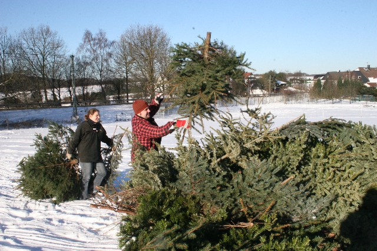
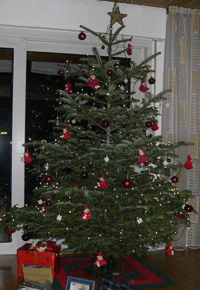

Frauenkarneval 2009
Traditionsgemäß trafen sich auch in diesem Jahr am Fastnachtsdienstag (24.02.2009) die närrischen kfd-Frauen zum Karneval im bunt geschmückten Gemeindeheim bei Kaffee, Kuchen und Schunkelliedern.
Traditionsgemäß trafen sich auch in diesem Jahr am Fastnachtsdienstag (24.02.2009) die närrischen kfd-Frauen zum Karneval im bunt geschmückten Gemeindeheim bei Kaffee, Kuchen und Schunkelliedern.
Zur Teilnahme und zum Besuch unseres diesjährigen Gemeindefestes lädt Sie die Gemeinde St. Josef sehr herzlich ein!
| Wann? | Samstag, den 20. Juni 2009 | Beginn um 14.00 Uhr, Ende in den Abendstunden |
| Sonntag, den 21. Juni 2009 | Beginn nach der Hl. Messe, Ende in den Abendstunden | |
| Wo? | Rund um unsere KircheSt. Josef |
Bitte, merken Sie sich den Termin schon einmal in Ihrem Kalender vor; denn es werden sicher wieder viele Attraktionen auf Sie warten!
Be 19.02.2009
Gemeinderat
der Katholischen Kirchengemeinde St. Josef
45549 Sprockhövel-Haßlinghausen
__________________________________________________________________________________
GR der Pfarrei St. Josef, Kortenstr. 2, 45549 Sprockhövel
| An die Mitgliederder Gemeinde St. Josef
durch Aushang An den Pfarrer der Pfarrgemeinde St. Peter und Paul in Witten Sprockhövel Wetter |
An den/die Vorsitzende/n des KV der Pfarrgemeinde St. Peter und Paul in Witten Sprockhövel WetterAn den/die Vorsitzende/n des PGR der Pfarrgemeinde St. Peter und Paul in Witten Sprockhövel Wetter |
__________________________________________________________________________________
den 10.02.2009
Einladung zur Gemeindeversammlung
Sehr geehrte Damen und Herren,
liebe Gemeindemitglieder,
Die nächste Firmung wird nicht, wie ursprünglich hier veröffentlicht, am 4. Oktober 2009, sondern bereits am Montag, den 28. September 2009 in unserer Gemeinde St. Josef gespendet werden. Mehr…
Seniorenclub St. Josef Haßlinghausen
Ein Jahr Seniorenclub!!
Jahresrückblick 2008 / Vorschau 2009
Was geschah in 2008?
Es begann am 25.01.2008, es war der Gründungstag des Seniorenclubs.
Die Gründungsurkunde hängt zur Einsicht in der Domschänke aus. Die anwesenden Senioren erörterten das Organisatorische und die Ziele des neu gegründeten Clubs. Man kam überein, dass die Abende in Harmonie und Eintracht gestaltet werden sollten.
Trotz Eintracht und Harmonie wurden aber auch wichtige Themen wie Groß-Pfarrei, Weggang des Pastors Imbria und Ehrenämter manchmal sehr kontrovers diskutiert.
Die erfreulichen Vorgänge:
Der Wandertag rund um den Kemnader See, mit Fischessen im Landhof Kemnade. Eine Fahrradtour nach Hattingen, mit Einkehr in das Gasthaus Kohlenbahn. Hier aß man gemütlich eine XXL Currywurst. Beteiligung an Grillen in Pastors Garten. Die Anzahl der Mitglieder ist konstant geblieben.
Es gab aber auch weniger gute Vorgänge.
Sollte man diese hier nochmals aufzählen? Nein, wir, die Senioren halten das nicht für gerechtfertigt. Vergangenes sollte man ruhen lassen und sich der Zukunft zuwenden.
Was geschieht in 2009?
· Vorrangig ist ein zweitägiger Besuch in Speyer, mit eingeschlossen das Technik-Museum und kulturelle Einrichtungen.
· Der Besuch des Eisenbahnmuseum in Bo-Dahlhausen. Hier wollen wir an einer Schienenbusfahrt teilnehmen.
· Ein Wandertag mit Fischessen ist so gut wie gesichert.
· Der Besuch der Kluterthöhle in Ennepetal ist ein Muss .
· Wir werden auch wieder eine Fahrradtour unternehmen. Ziel ist noch offen.
· Wenn es das Grillen in Pastors Garten noch geben sollte, sind wir auch wieder dabei.
Und nun bitte vormerken!!
· Das Seniorentreffen findet wie bisher jeden letzten Freitag im Monat um 19 Uhr statt. Der Treffpunkt ist die Domschänke.
· Wie in 2008 werden wir auch in 2009 keine Beiträge erheben.
Mit christlichem Gruß
Wolfgang Nitz, ein Mitglied des Seniorenclubs
Stand: 19.01.2009
In der Westdeutschen Zeitung (WZ) vom 16.01.2009, Ausgabe Sprockhövel, ist der als PDF-Datei angefügte Bericht über unsere diesjähreige Sternsingeraktion veröffentlicht worden.
Ein herzlicher Dank gilt einerseits den 37 Sternsingerinnen und Sternsingern für ihre kräftezehrende Arbeit, andererseits aber auch den Besuchten für deren großartige Spendenfreudigkeit.
Be 16.01.2009
Am Samstag, den 10. und Sonntag, den 11. Januar 2009 haben sich wieder unsere Sternsinger auf den Weg gemacht, um Ihnen den Segen in Ihre Wohnung zu bringen.
Die Aussendung der Sternsinger erfolgte am Samstag um 10.00 Uhr von unserer Kirche aus.
Unter Gesamtleitung von Frau Claudia Hauschulte, als frühere Frau Wodausch sehr vielen bekannt, brachen zahlreiche Gruppen zu den Familien in unserer St. Josefs Gemeinde auf, um den Segensspruch „CHRISTUS MANSIONEM BENEDICAT“ – „Christus segne euer Haus“ an die Wohnugstür zu schreiben. Mehr…
Unten finden Sie als PDF-Dateien die Gemeindenachrichten aus dem Jahr 2008.
Gemeindenachrichten vom 21.12. bis 18.01.2009: Hier klicken!
Mehr…
Am 10. Januar 2009 fand die traditionelle Weihnachtsbaumaktion der Pfadfinder vom Stamm St. Josef Haßlinghausen statt. Morgens um zehn Uhr trafen sich 15 Pfadfinderinnen und Pfadfinder im Alter von 16 bis 31 Jahren, um gemeinsam die Sammel-Bezirke aufzuteilen, in denen die Bäume abgeholt werden sollten. Denn bis zum frühen Morgen an diesem herrlichen Wintertag waren noch per E-Mail und Anrufbeantworter Abhol-Aufträge eingegangen.
 |
|
| Pfadfinder beim Verladen der eingesammelten Bäume |
Bei strahlendem Sonnenschein und knirschendem Schnee sammelten viele fleißige Haßlinghauser Pfadfinderinnen und Pfadinder knapp 90 Bäume ein. Die hierbei eingenommenen Spenden ergaben die stolze Summe von 500,- Euro.
Eine Hälfte dieses Betrages geht an die Jahresaktion der Pfadfinder Leben ist mehr. Die andere Hälfte erhält der Pfadfinderstamm St. Josef, um mit Hilfe dieses Geldes die Gruppenarbeit mit den Kindern und Jugendlichen vor Ort zu ermöglichen.
Zum Abschluss dieser Aktion trafen sich um 14:00Uhr die eifrigen Sammlerinnen und Sammler zu einem gemeinsamen Mittagessen im Pfarrheim. Zufrieden mit dem Arbeitsergebnis und dem harmonischen Abschluss trennten sich die Wege bis zum nächsten Projekt.
Ein ganz herzlicher Dank gilt der Firma Jakobi und der Firma Aurego, Wuppertal, die den Stamm St. Josef mit ihren Fahrzeugen zum Abtransport der Bäume tatkräftig unterstützt haben. Nicht zuletzt danken die Pfadfinder ebenso herzlich dem Landwirt Joh. Krevert, auf dessen Gelände die Bäume wieder gelagert werden können, bis sie als Osterfeuer in Rauch und Flammen aufgehen werden.
|  | |
| Hier werden die Bäume lagern, bis sie als Osterfeuer lodern dürfen |
P. Berretz
10.01.2009
Hinweis auf die Weihnachtsbaumaktion 2009 der Pfadfinder
| Jetzt ist es wohl soweit, und es wird in den Haushalten wieder heißen: „Wer holt mir denn nun den rieselnden Weihnachtsbaum ab?“
Wie in der vergangenen Jahren werden unsere Pfadfinder Sie nicht im Stich lassen! Dazu melden Sie sich bitte bis zum 09.01.2009 bei den Pfadfindern unter nachfolgenden Kontaktmöglichkeiten: |
 |
| Ob er bis zum 10. Januar 2009 durchhalten wird?
Dann kommen nämlich die Pfadfinder, um ihn abzuholen! |
| Was müssen Sie tun? | Auf Anrufbeantworter sprechen oder
E-Mail schreiben |
|
| Telefonnummer für Anrufbeantworter: | 0 23 39 / 1 37 32 01 | |
| E-Mail-Anschrift: | wba@sanktjosef.de |
Die Pfadfinder bitten für diese Leistung um eine Spende in Höhe von 3,- EUR.
Der Erlös geht zu 50% an die in Zusammenarbeit mit „missio“ durchgeführte Jahresaktion der Pfadfinder „Leben ist mehr“ und zu 50% an unseren hiesigen Pfadfinderförderverein zur Gestaltung der Jugendarbeit vor Ort.
Be 02.01.2009